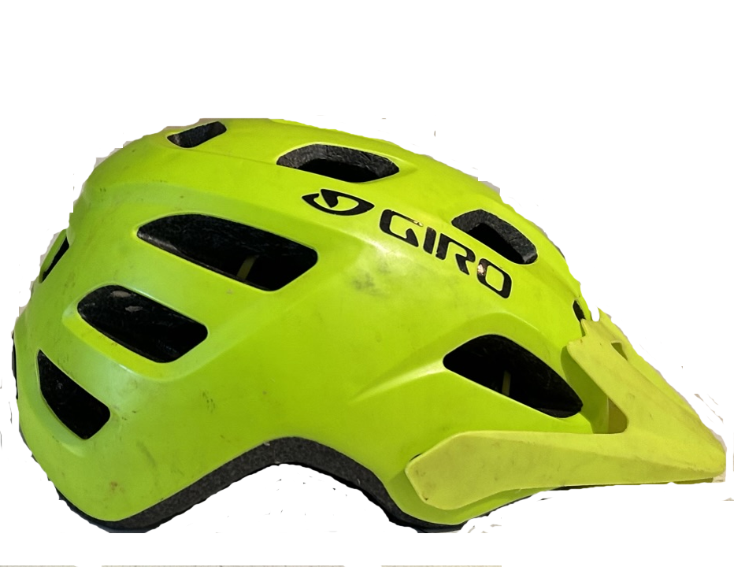

In order to stay safe, and start riding, you are going to need of course, a bike, water, and saftey equipment.
You really only need a helmet, but you can wear knee pads and elbow pads if you want extra protection.It's important to stay hydrated, so a
water bottle with a cage or a camelback is necassary.You also should learn basic skills.